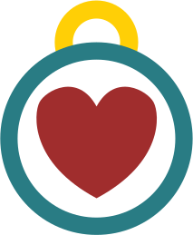

Loyal Dog Rescue
Loyal Dog Rescue is a brand dedicated to helping animals in need. With all the trouble behind them, we keep the mood of the website light and playful. The purpose of this website is to get these dogs into their happy, forever homes.
